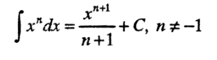
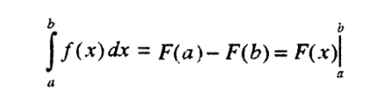

9. Математически задачи
План:
Задачи за домашно 9 и 10
Полиноми - представяне, стойности, производни, интеграли,
Числени методи
Комплексни числа
Задачи за домашно 11 и 12
*** Полиноми (многочлен, Polynomial)
Pn(x) = anxn
+ an-1xn-1
+ ... + a1x + a0
Полиноми с цели коефициенти.
Пример: P3(x) = x3
+ 4x2 + 5
Нормална форма на полином - коефициентите нямат общ делител.
Пример: P3(x) = x3
+ 4x2 + 5 е нормална форма, а P3(x)
= 2x3 + 8x2 + 10 не е.
* Представяне
- като редица от коефициенти
a0, a1, ..., an
Пример: 5 0 4 1
- като низ с правилата на TeX, LaTeX
$a_nx^n + a_{n-1}x^{n-1} + \cdots + a_1x +a_0$
Пример: $x^3+4x^2+5$
- като низ на езика Паскал
(Pascal)
Пример: x^3 + 4*x^2 + 5
- като низ на езика С
Пример: x*x*x + 4*x*x + 5
* Пресмятане на стойност
- По общата формула за многочлен със запазване на xk,
за k = 1, 2, ..., n, без използване на аритметичната
функция pow.
- Стойността на полиномът Pn(x)
се смята за време O(n) по схемата
на Хорнер. Последователно се пресмятат стойностите на
редица от n полинома, всяка за време O(1).
- p0(x) = an, pi(x) = an−i + xpi-1(x), i = 1, 2, …, n.
Получаваме Pn(x) = pn(x).
* Производна
на полином
P'n(x) = nanxn-1
+ (n-1)an-1xn-2
+ ... + a2x + a1
Програма за намиране на производната на полином.
Минимална и максимална стойности:
- решаване на уравнението P'n(x) = 0.
- в даден интервал, за цели стойности на аргумента x
Задача от състезания: Полином.
https://www.hackerrank.com/nbu-march-2020-programming-contest
* Интеграл
- неопределен интеграл - примитивна функция
int(xn) = xn+1/(n+1),
защото (xn+1)' = (n+1)xn

- определен интеграл - граници на ингегриране

където F'(x) = f(x).
- пресмятане на лице (площ) на фигура, заградена от графика на
функция и абцисната ос (видео).
Задачи за полиноми
*** Числени методи
* Нули на функция (корени на уравнение) - Slides
- метод на разполовяването (bisection
method)
Задача: Корен2020
- други методи
* Системи от уравнения
Задачи, при които се налага решаване на система от уравнения:
пресечни точки на фигури в равнината,
- линейни системи от уравнения
метод на Гаус - Gaussian Elimination - видео
Gauss–Seidel
method
- нелинейни системи от уравнения
Предварителни пресмятания и довеждане на решението до няколко
формули.
Търсене на целочислени решения (пълно изчерпване).
Нелинейни
системи и квантови компютри
*** Комплексни числа [AL Complex numbers, p.
266], (Wiki)
Комплексно число се представя с израза x + yi, където x
и b са реални числа, а i се нарича имагинерна
единица, дефинирана с i2 = −1.
В този израз x е реалната част, а y е имагинерната
част на комплексното число.
Пример: Числото 3 + 2i има реална част 3 и имагинерна
част 2.
Реалните числа могат да се представят като комплексни с имагинерна
част 0.
Пример: 2 = 2 + 0i.
Комплексни
числа в C++11
Радиани
и градуси
Комплексни числа и вектори в декартовата равнина.
Пример: com.cpp